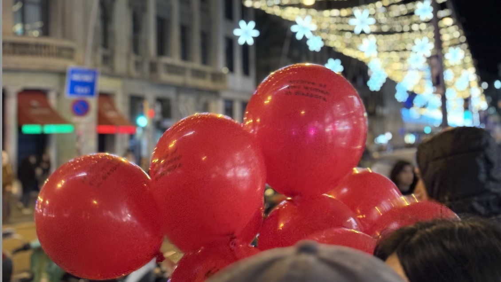

Social Movement
•
May 2026
Floating: The Thin Red Line as My Roots
As we shouted our slogans, a camera watched from the sidelines. I couldn't stop imagining—how will they tell our story? Under the pitch-black night, our balloon broke free from its knot; this tiny cell truly rose into the European sky, drifting toward a distant horizon unknown to us. I watched it fly so far, but fortunately, there are so many red cells in every corner of the world. Whenever she sees those surging red traces on the streets, she knows—at least for now—that I am not floating alone.
READ MORE